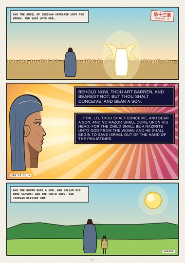
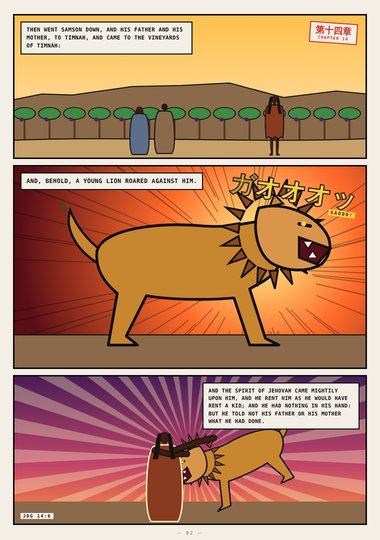
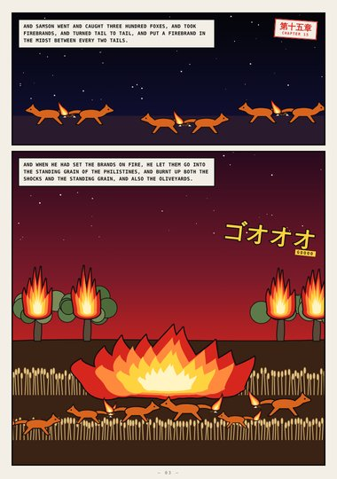
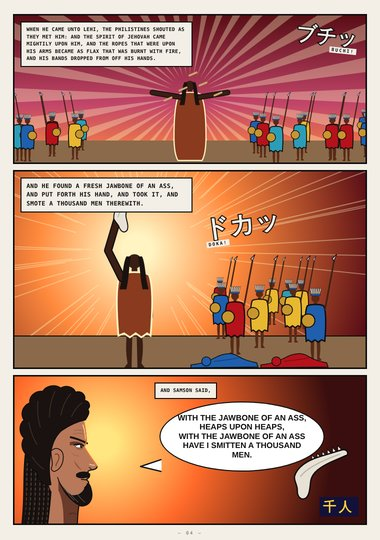
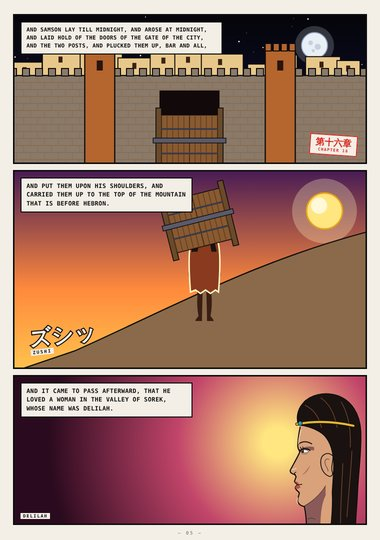
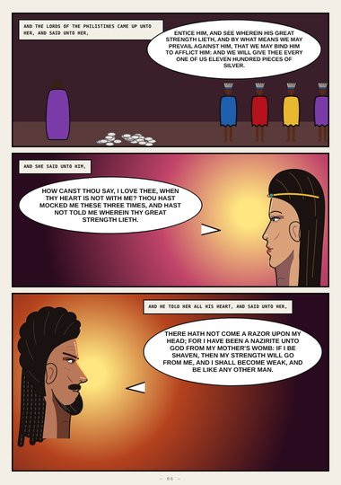
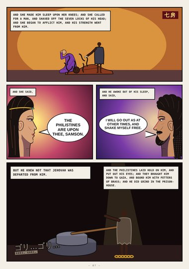
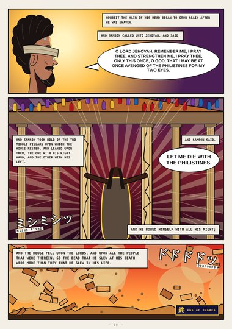

Judges · Book Two · Judges 13–16
Samson
The Nazirite from the womb, the young lion, three hundred foxes, the jawbone, the gates of Gaza, Delilah, the seven locks, and the two middle pillars.
Start reading ›Pages
 CoverCoverJudges 13–16
CoverCoverJudges 13–16
Page 1A Nazirite unto GodJudges 13:3–24
Page 2The Young LionJudges 14:5–6
Page 3Three Hundred FoxesJudges 15:4–5
Page 4The JawboneJudges 15:14–16
Page 5The Gates of GazaJudges 16:3–4
Page 6Wherein Thy Great Strength LiethJudges 16:5–17
Page 7The Philistines Are upon TheeJudges 16:19–21
Page 8The PillarsJudges 16:22–30